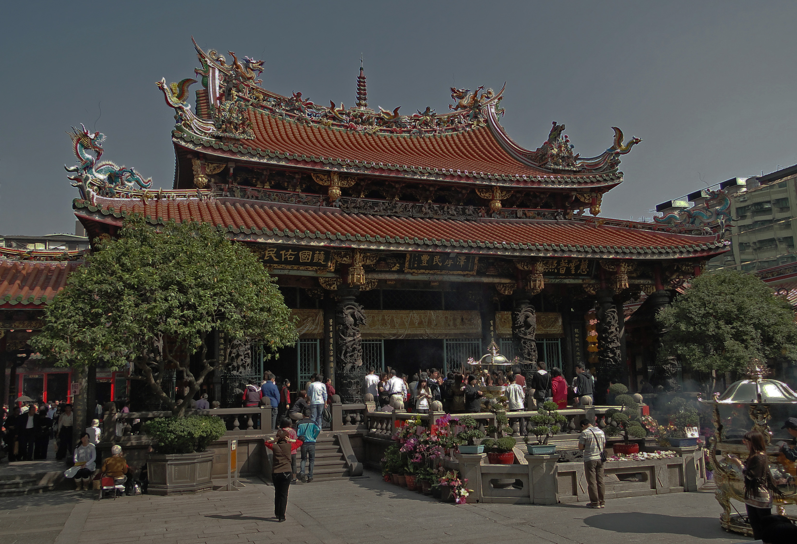
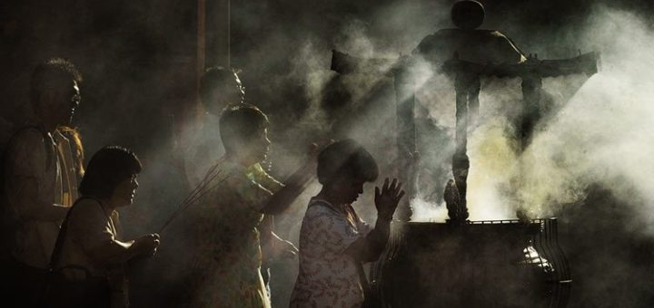

所謂的「臺灣民間信仰」是臺灣地區最多人數信仰，又稱為「通俗信仰」。是指自古以來，民間相承襲下來，又受到佛教、道教與儒家影響的一種宗教信仰型態，這三種宗教類型，乃是「台灣民間信仰」的基型。
臺灣民間信仰根基於民族數千年來的融合與悠久的歷史 ，其教義、儀式及組織都與世俗的社會生活合而為一，亦有臺灣本地發展出來的特色。


台灣民間的宗教，就類別來說，有佛教、有道教、歷史人物、民俗信仰等等，而最不受地域的隔閡、種族的限制，唯一均有的共同信仰者，便是「土地神」，土地神是台灣民間信仰最久，流布最廣泛的神祇之一
三清道祖者，即道教所崇奉的三位最高神靈，依次分別為居住在清微天的玉清元始天尊、禹餘天的上清靈寶天尊，以及大赤天的太清道德天尊。